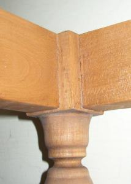
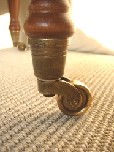
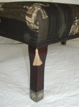
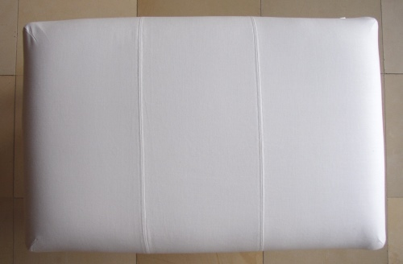
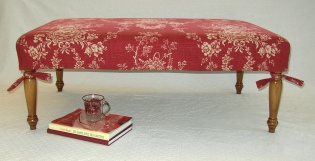
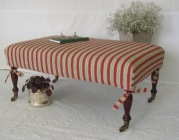

Der
RAHMEN
Unsere
Footstools sind belastbar und auf Langlebigkeit ausgerichtet. Die Basis
dafür bilden Rahmen und Beine aus Buchenholz. Die Beine sind mit
dem Rahmen verzapft. (und nicht angeschraubt)!



Die
Beine werden im gewünschten Farbton gebeizt.
Die hochwertige Polsterarbeit ist auf beständige Festigkeit ausgerichtet.
ALLE Arbeiten werden von HAND ausgeführt.
Die hochwertige Polsterarbeit ist auf beständige Festigkeit ausgerichtet.
ALLE Arbeiten werden von HAND ausgeführt.
...
mit Auge für's Detail



Schutz und Tapetenwechsel